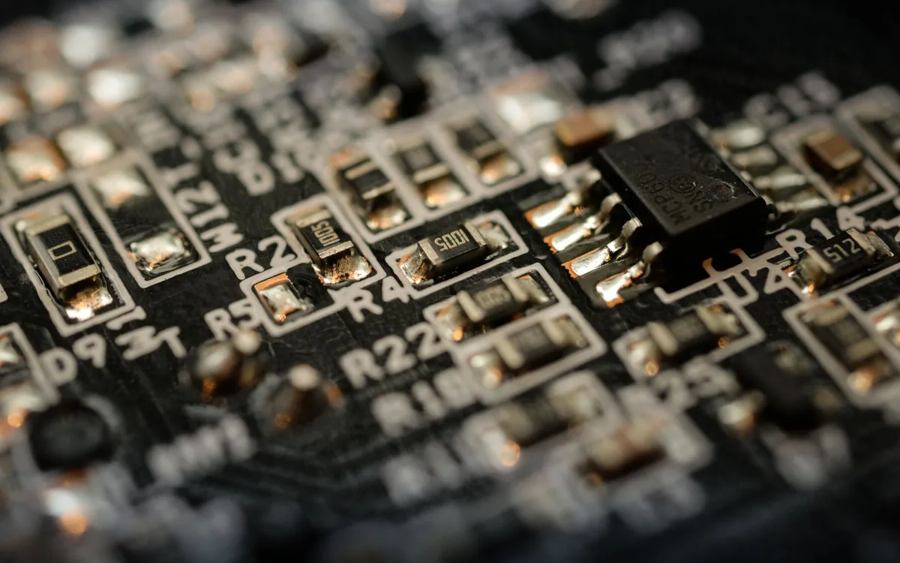

Inteligência artificial
IA & — Quem é mais importante?
Tecnologia, escolhas e o valor do ser humano.
Conhecer livro →Atuação 08
Inteligência artificial aplicada à rotina da empresa.

Visão geral
Implantação de inteligência artificial na rotina da empresa, com ferramentas escolhidas para o trabalho real.
Identifico onde a IA ajuda no seu negócio, escolho as ferramentas, coloco para funcionar e oriento a equipe a usar.
Como atuo
Onde se aplica
Empresas que querem usar inteligência artificial no trabalho do dia a dia, sem complicação.
Como eu trabalho
Também escrevo sobre IA
Tecnologia, escolhas e o valor do ser humano.
Conhecer livro →
50 prompts para rir, se surpreender e explorar a inteligência artificial.
Conhecer livro →
Introdução à inteligência artificial aplicada ao dia a dia.
Conhecer livro →
Uma visão organizada dos caminhos da inteligência artificial.
Conhecer livro →